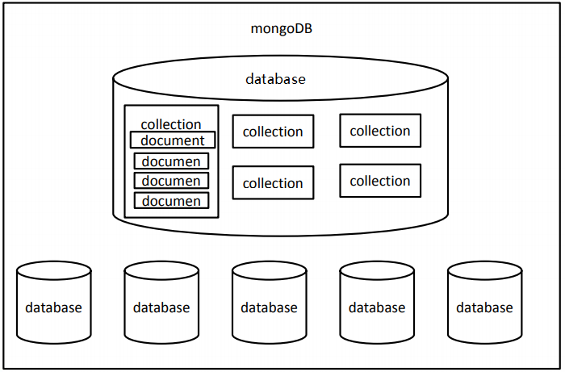

数据库（Database）
- 数据库是按照数据结构来组织、存储和管理数据的仓库。
- 我们的程序都是在内存中运行的，一旦程序运行结束或者计算机断电，程序运行中的数据都会丢失。
- 所以我们就需要将一些程序运行的数据持久化到硬盘之中，以确保数据的安全性。而数据库就是数据持久化的最佳选择。
- 说白了，数据库就是存储数据的仓库。
数据库分类
数据库主要分成两种：
- 关系型数据库
- MySQL、Oracle、DB2、SQL Server ……
- 关系数据库中全都是表
- 非关系型数据库
- MongoDB、Redis ……
- 键值对数据库
- 文档数据库MongoDB
MongoDB简介
- MongoDB是为快速开发互联网Web应用而设计的数据库系统。
- MongoDB的设计目标是极简、灵活、作为Web应用栈的一部分。
- MongoDB的数据模型是面向文档的，所谓文档是一种类似于JSON的结构，简单理解MongoDB这个数据库中存的是各种各样的 JSON。（BSON）
数据库（database）
-
数据库的服务器
- 服务器用来保存数据：mongod 用来启动服务器
-
数据库的客户端
- 客户端用来操作服务器，对数据进行增删改查的操作：mongo 用来启动客户端
安装
下载
下载地址：https://www.mongodb.com/download-center/community 或者 https://www.mongodb.org/dl/win32/
MongoDB的版本偶数版本为稳定版，奇数版本为开发版。MongoDB对于32位系统支持不佳，所以
3.2版本以后没有再对32位系统的支持。
安装及配置
下载完后直接安装。默认安装路径：C:\Program Files\MongoDB\Server\3.2\bin
配置环境变量
将MongoDB的 bin 目录（此处为C:\Program Files\MongoDB\Server\3.2\bin ）添加到 path 下
操作：在文件资源管理里面右键点击 此电脑 —》属性—》高级系统设置—》环境变量—》将MongoDB的 bin 目录添加到用户变量的 Path下或者系统变量的 Path下；
创建数据目录
MongoDB将数据目录存储在 db 目录下。但是这个数据目录不会主动创建，我们在安装完成后需要创建它。请注意，数据目录应该放在根目录下（(如： C:\ 或者 D:\ 等 )。
在本教程中，我们已经在 C 盘安装了 mongodb，现在让我们创建一个 data 的目录然后在 data 目录里创建 db 目录。
1 | c:\>cd c:\ |
你也可以通过 window 的资源管理器中创建这些目录，而不一定通过命令行。
启动MongoDB服务器
打开CMD命令行窗口，输入：
1 | mongod |
32位系统第一次启动：
1 | mongod --storageEngine=mmapv1 |
如果出现如下输出，则说明启动成功
1 | ... |
指定端口和路径
在控制台启动MongoDB
1 | mongod --dbpath 路径 --port 端口号 |
示例：
1 | mongod --dbpath C:\Users\lilichao\Desktop\mongo\data\db --port 1234 |
修改 db 目录，并且制定端口号为 1234
注意：打开的命令行窗口不能关闭
如果你觉得每次都要运行 mongod 并且不能关闭窗口会很麻烦，那么你可以将MongoDB设置为系统服务，可以
自动在后台启动，不需要每次都手动启动
-
在 c 盘的 data目录（没有，则创建 data 目录）下，创建数据库
db和日志文件的目录log -
创建配置文件。在目录
C:\Program Files\MongoDB\Server\3.2（即MongoDB的安装目录） 下添加一个配置文件mongod.cfg，该文件必须设置 systemLog.path 参数，包括一些附加的配置选项更好。例如，
mongod.cfg配置文件指定 systemLog.path 和 storage.dbPath。具体配置内容如下：1
2
3
4
5systemLog:
destination: file
path: c:\data\log\mongod.log
storage:
dbPath: c:\data\db -
以管理员的身份打开命令行窗口，执行如下的命令：
1
sc.exe create MongoDB binPath= "\"C:\Program Files\MongoDB\Server\3.2\bin\mongod.exe\" --service --config=\"C:\Program Files\MongoDB\Server\3.2\mongod.cfg\"" DisplayName= "MongoDB" start= "auto"
说明示例
1
sc.exe create MongoDB binPath= "\"mongod的bin目录\mongod.exe\" --service --config=\"mongo的安装目录\mongod.cfg\"" DisplayName= "MongoDB" start= "auto"
-
启动mongodb服务。如果启动失败，证明上边的操作有误，在控制台输入 sc delete MongoDB 删除之前配置的服务，然后从第 1 步再来一次
-
这时，你可以通过 任务管理器—》服务—》打开服务，找到 MongoDB Server 服务，然后右键点击，选择属性，将启动类型选为自动，此后，每次电脑开启后，MongoDB Server 服务都会自动开启，而不用手动开启。
MongoDB 后台管理 Shell
如果你需要进入MongoDB后台管理，你需要在打开一个cmd窗口，输入 mongo 连接mongodb ，出现 >，MongoDB Shell是MongoDB自带的交互式Javascript shell,用来对MongoDB进行操作和管理的交互式环境。
当你进入mongoDB后台后，它默认会链接到 test 文档（数据库）：
1 | mongo |
由于它是一个JavaScript shell，您可以运行一些简单的算术运算:
1 | 2 + 2 |
在 Mongo Shell 中的一些命令
help <option>语法帮助use <database>更改当前操作的数据库show <option>根据参数显示列表- dbs 显示数据库列表
- collections 显示当前数据库的集合
- profile 显示时间超过1毫秒的system.profile条目
- log[name] 显示登录记忆的最后一段
- exit 退出数据库
- load(script) 加载js文件db.auth(username , password)
在当前数据库做身份验证
关闭MongoDB
-
打开新的命令行窗口
-
登录服务器：
1
mongo
-
切换管理员用户：
1
admin
-
关闭数据库
1
db.shutdownServer()
mongo 后面可以跟的参数
| 参数 | 说明 |
|---|---|
| –help –h | 返回基本帮助和用法文本 |
| –version | 返回MongoDB的版本 |
| –config<文件名> -f<文件名> | 指定包含运行时配置的配置文件 |
| –verbose -v | 增加发送到控制台日志的数量 |
| –quiet | 减少发送到控制台日志的数量 |
| –port<端口> | 指定mongod的端口，默认27017 |
| –bind_ip<端口> | 指定id地址 |
| –maxConns<编号> | 指定链接的最大数 |
| –logpath<路径> | 指定日志文件的路径 |
| –auth | 启用远程主机的身份验证 |
| –dbpath<路径> | 指定数据库实例的路径 |
| –nohttpinterface | 禁用HTTP接口 |
| –nojournal | 禁用日志 |
| –noprealloc | 禁止预分配数据文件 |
| –repair | 在所有数据库上运行修复程序 |
基本概念
数据库（database）是一个仓库，在仓库中可以存放集合。
集合（collection）：类似于数组，在集合中可以存放文档。集合就是一组文档，也就是集合是用来存放文
档的
文档（document）：文档数据库中的最小单位，我们存储和操作的内容都是文档。类似于JS中的对象，在MongoDB中每一条数据都是一个文档。集合中存储的文档可以是各种各样的，没有格式要求
多个文档组成集合，多个集合组成数据库

创建数据库
-
使用use时，如果数据库存在则会进入到相应的数据库，如果不存在则会自动创建。一旦进入数据库，则可以使用db来引用当前库
1
use 数据库名
-
向集合中插入文档，如果集合不存在则创建（
<collection>代指具体的集合名）1
db.<collection>.insert(文档)
-
创建一个新的集合
1
db.createCollection()
-
删除集合
1
db.<collection>.drop()
文档的增删改查
-
插入文档（
<collection>代指具体的集合名）1
db.<collection>.insert ()
-
查询文档
1
db.<collection>.find ()
-
删除文档
1
db.<collection>.remove()
-
修改文档
1
db.<collection>.update()
添加文档
1 | db.<collection>.insert (文档对象或由文档对象组成的数组) |
- insert()可以用于向集合中添加一个或多个文档，可以传递一个对象，或一个数组。
- 可以将对象或数组中的对象添加进集合中
- 添加时如果集合或数据库不存在，会自动创建
- 插入的文档对象会默认添加
_id属性，这个属性对应一个唯一的id，是文档的唯一标识。也可以自己指定_id，如果我们指定了，数据库就不会在添加了，如果自己指定_id也必须确保他的唯一性。
1 | db.<collection>.insertOne (文档对象) // 3.2以上版本支持 |
示例
1 | db.test.insert({name: "vigor", age: '18'}) |
删除文档
1 | db.<collection>.remove() |
- remove()可以用来移除符合条件的所有文档对象
- 方法接收一个查询文档作为参数，只有符合条件的文档才会被删除
- 删除数据是永久的，不能撤销
- 第二个参数是指是否只删除符合条件的一个文档，默认是 false，
示例
1 | db.test.remove({age: '18'}, true) |
修改文档
1 | db.<collection>.update() |
替换文档
- 可以在update()中传递两个参数，一个是查询文档，一个是新的文档，这样符和条件的文档将会被新文档所替换
- update()的第三个参数，用来指定是否使用upsert，默认为
upsert: false - update()的第四个参数，用来指定是否同时修改多个文档，默认为
multi: false
示例
1 | db.test.update({name: "vigor"}, {age: "22"}) |
修改器
- 使用update会将整个文档替换，但是大部分情况下我们是不需要这么做的
- 如果只需要对文档中的一部分进行更新时，可以使用更新修改器来进行。
- 我们将要学习以下几个修改器
$set、$unset、$inc、$push、$addToSet
$set、$unset
-
$set用来指定一个字段的值，如果这个字段不存在，则创建它。 -
语法：
1
db.<collection>.update(查询对象, {$set:更新对象});
-
$unset可以用来删除文档中一个不需要的字段，用法和set类似。
示例
1 | db.test.update({name: "vigor"}, {$set:{age: "22"}}); |
$inc
$inc用来增加已有键的值，或者该键不存在那就创建一个$inc只能用于Number类型的值
查询文档
1 | db.<collection>.find () |
-
MongoDB使用find()来对文档进行查询，返回是一个数组
-
find()需要一个查询文档作为参数，如果不传该参数，则会返回集合中的所有元素。
-
可以将查询条件以键值对的形式添加到查询文档中
-
查询条件
1
$lt、$lte、$gt、$gte、$ne、$or、$in、$nin、$not、$exists、$and
1 | db.<collection>.find ({name: "vigor"}) |
1 | db.<collection>.findOne() |
用来查询集合中符合条件的第一个文档，返回的是一个文档对象
1 | db.<collection>.find ().count() |
查询所有结果的数量
1 | db.<collection>.find().limit(num); |
limit()设置显示数据的上限，上一条语句表示最多显示 num 条数据
1 | db.<collection>.find().skip(num) |
skip()用于跳过指定数量的数据，上一条语句表示跳过 num 条数据
查询文档时，默认情况是按照_id的值进行排列（升序），sort()可以用来指定文档的排序的规则，sort()需要传递一个对象来指定排序规则：1表示升序， -1表示降序。limit skip sort 可以以任意的顺序进行调用
1 | db.<collection>.find({}).sort({filename1: 1, filename2: -1}); |
上面表示，可以依据 filename1 来进行升序，当 filename1 相同时，可以依据 filename2 来降序来排序
在查询时，可以在第二个参数的位置来设置查询结果的 投影，规则为：1表示要显示的字段，0表示不显示的字段
1 | db.<collection>.find({},{filename1: 1, _id:0 , filename2: 1}); |
上面表示，只显示 filename1 和filename2 字段的内容，而不显示 _id 和其他字段的内容（默认是会显示 _id 的内容，所以可以将其设置为 0 来隐藏其内容）
文档之间的关系
-
一对一（one to one）
在MongoDB，可以通过内嵌文档的形式来体现出一对一的关系
例如，夫妻 (一个丈夫 对应 一个妻子)
1
2
3
4
5
6
7
8
9
10
11
12
13
14db.wifeAndHusband.insert([
{
name:"黄蓉",
husband:{
name:"郭靖"
}
},{
name:"潘金莲",
husband:{
name:"武大郎"
}
}
]);“黄蓉” 的丈夫对应的是 “郭靖”，“潘金莲” 的丈夫对应的是 “武大郎”
-
一对多（one to many）/ 多对一 (many to one)
也可以通过内嵌文档来映射一对多的关系
例如，父母 - 孩子、用户 - 订单、文章 - 评论
1
2
3
4
5
6
7
8
9
10
11
12
13
14
15
16
17
18
19
20
21
22//一对多 用户(users) 和 订单(orders)
db.users.insert([{
_id: "swk",
username: "孙悟空"
},{
_id: "zbj",
username: "猪八戒"
}]);
// 一个用户对应多个商品
db.order.insert({
list:["香蕉","苹果"],
user_id: "swk"
});
db.order.insert({
list:["牛肉","漫画"],
user_id: "zbj"
});
//查找用户"孙悟空"的订单
var user_id = db.users.findOne({username:"孙悟空"})._id;
db.order.find({user_id:user_id}); -
多对多(many to many)
可以通过数组的形式来映射一对多的关系
分类 - 商品、老师 - 学生
1
2
3
4
5
6
7
8
9
10
11
12
13
14
15
16
17
18
19
20
21
22
23
24
25
26//多对多
db.teachers.insert([
{name:"洪七公"},
{name:"黄药师"},
{name:"龟仙人"}
]);
db.stus.insert([
{
name:"郭靖",
tech_ids:[
ObjectId("59c4806d241d8d36a1d50de4"),
ObjectId("59c4806d241d8d36a1d50de5")
]
},{
name:"孙悟空",
tech_ids:[
ObjectId("59c4806d241d8d36a1d50de4"),
ObjectId("59c4806d241d8d36a1d50de5"),
ObjectId("59c4806d241d8d36a1d50de6")
]
}
])
//多个老师有多个学生，多个学生也有多个老师
db.teachers.find()
db.stus.find()